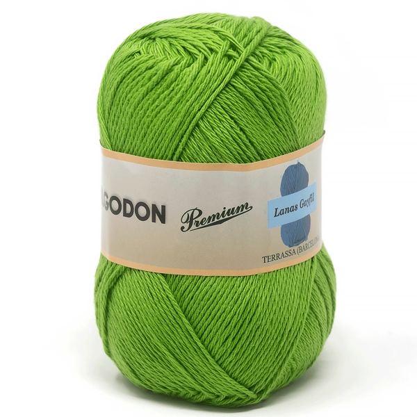

La ruana es una prenda de vestir tradicional colombiana, especialmente asociada con la región del altiplano cundiboyacense. Su historia se remonta a la época precolombina, donde los indígenas muiscas usaban mantas de lana para protegerse del frío. Se cree que la ruana moderna es una evolución de estas mantas, influenciada por los capotes españoles y los tejidos traídos de Ruan en Francia. En Maru-Lana, continuamos esta tradición, tejiendo cada pieza con la pasión y el conocimiento transmitido por generaciones.
Tradición y Calidez en Cada Hebra
Descubre la auténtica belleza de las ruanas colombianas, tejidas con amor y dedicación artesanal.
Explorar Colección¿Por Qué Elegir Ruanas Maru-Lana?
Autenticidad y Tradición
Cada ruana es una pieza única que honra la rica herencia artesanal colombiana.

Calidad Superior
Utilizamos las mejores lanas para garantizar suavidad, durabilidad y calidez inigualables.
Diseños Exclusivos
Encuentra ruanas con estilos modernos y clásicos, perfectas para cualquier ocasión.
Apoyo al Artesano Local
Al comprar una ruana, apoyas directamente a las comunidades de artesanos colombianos.